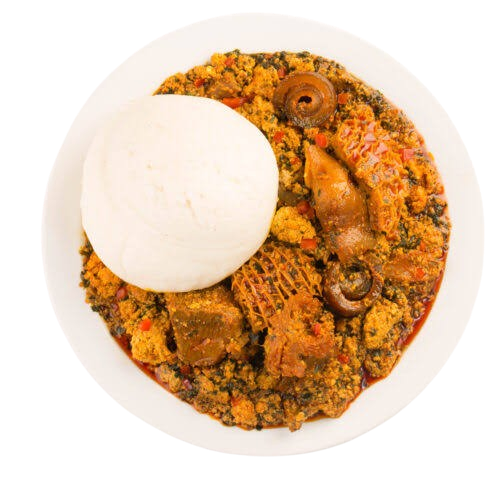

Your Best Home For Recipes
E Go Sweet!

SEMOVITA AND EGUSI SOUP
Ingredients
Golden Penny Semovita
2 Cups Melon
1 Cup Palm Oil or a little more or less depending on preference
4 Tbsp Crayfish
3 Tbsp locust beans
Chopped spinach Ugu
1 Red Bell Pepper Tatashe
1 Habanero Pepper Ata Rodo
1 Fresno Pepper Shombo
2 Onions
Stock Cube Optional
1 lb Beef Tripe Assorted meat, Dry Fish and Cow Leg
Salt To Taste
Instructions
Blend the peppers and onions until smooth and set aside.
Wash your stock fish and set aside.
Boil your beef stock and set aside.
Blend the Egusi melon, half of the second onion, and crayfish together. Set aside.
Heat the palm oil in a pan over medium heat until melted but not overheated.
Add the diced remaining half onion and half of the locust bean. Cook for about 3 minutes on medium heat.
Add the blended pepper and cook until the water is reduced, approximately 15 minutes, stirring every 5 minutes to prevent burning.
Add the remaining locust bean, beef stock, and salt to taste. Cover and cook for another 5 minutes.
Gently introduce the blended Egusi into the sauce without stirring. Cover and cook for about 20 to 30 minutes, keeping an eye on it to avoid burning. Add more stock or water if needed.
Add the fish and meat, cooking for another 5 minutes.
Stir in the spinach and simmer for about 5 minutes, stirring constantly. Adjust seasoning if necessary.
Serve with Golden Penny Semovita.
EGUSI SOUP
Veggie Stir-Fry Pasta
Ingredients
400 gram Golden Penny Spaghetti
2 tbsp Golden Penny Soya Oil
½ Cabbage
2 carrots
2 Spring onions
½ tsp Ground black pepper
1 tsp Soy sauce
2 Seasoning cubes
Instructions
Boil enough water in a boiling pot. Add salt generously. Slide the spaghetti to the pot.
Cook the spaghetti as per the instructions given in the pack.
Chop the spring onion white part and green part separately. Heat a broad pan with Golden Penny oil, first add the white part of the spring onion, fry for 30 secs.
Then add the carrot and cabbage one after other, frying each for a minute in high flame. Toss if you can, to get the smoky flavour.
Lastly add the pepper and sauce, salt as required for veggies and then the green part of the spring onion.
Add the cooked pasta and stir/toss well so that the veggies get mixed with the pasta evenly.
Serve as desired.
PASTA
BEEF BURGER
Ingredients
Golden penny pure vegetable oil
2 tbsp Golden Penny Soya Oil
Beef patties smoothly grounded beef
Seasoning cubes
Onions
Garlic
Black pepper
Tomatoes
Lettuce
Egg
Tomato ketchup
Mayonnaise
Burger bread
Cheese
INstructions
Season the beef patty with seasoning cubes, chopped onions, garlic, pinch of black pepper then mix to incorporate well
Slice tomatoes and onions and set aside
Wash lettuce , allow to drain
Pour Golden penny pure vegetable oil into a frying pan allow to heat up
Fry beef patties till golden brown
Break egg into frying pan and fry
Mix 2 table spoon of tomato ketchup and 3 table spoon of mayonnaise and a pinch of black pepper to make the burger mix
Cut burger bread into half, coat the lower half with the burger mixture, put a bed of lettuce ,fried patty, fried egg, sliced onion and tomatoes ,cheese then coat with the burger mixture
Place the other half of the burger bread
BURGER
Banga Soup
Ingredients
1.5 litres Palm-nut extract
1 medium-size Fresh Catfish or any Fresh Fish of your choice
200 grams Assorted Meat
2-3 medium pieces Stockfish (panla, okporoko)
1-2 medium Dried Fish
1/2 Cup Fresh or Smoked Shrimps (optional)
1 tablespoon Ground Dried Crayfish or Prawns ( Prawns preferably)
1-2 tablespoons Banga Spice
1-2 tablespoons Crushed Obeletientien Leaves or Dried Bitter Leaves
1 Oburunbebe Stick
1 medium Onion chopped
2 tablespoons Dried Pepper (Atagungun)
1/2 Cup Cup Periwinkles (optional)
2 Seasoning Cubes
1 teaspoon Salt
Instructions
Wash fresh catfish with salt to remove the slime. Alternatively, you can freeze it for a day, leave to thaw, and just rinse with water.
Wash and boil the meat with some salt, seasoning and onions. Cook till tender.
When the meat is tender, add the dried fish.
Add the palm nut extract. Let it boil for 10-12 minutes.
Then add the banga Spice, Oburunbebe stick, ground crayfish or prawns, dried pepper, seasoning cube, and salt to taste. Taste for salt and add if needed.
Add the fresh Catfish or your preferred fresh fish, fresh shrimps, and periwinkles. Reduce the heat, allow to cook for 7-10 minutes, at this time, palm oil would have settled on the top. Remove some of the palm oil if you find it too oily.
Blend your bitter leaves or obeletientien. Add the obeletientien or bitter leaves, stir and combine. Cook for 2 minutes, and turn off the heat.
Remove the Oburunbebe stick.
BANGA SOUP